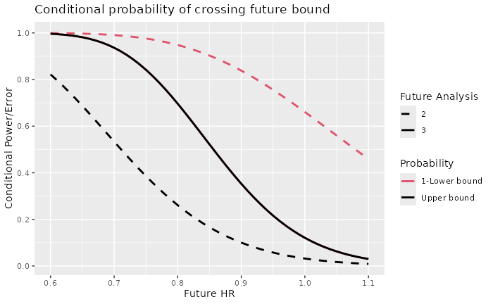

Conditional power and conditional error
Source:vignettes/ConditionalPowerPlot.Rmd
ConditionalPowerPlot.RmdIntroduction
We provide a simple plot of conditional power at the time of interim analysis. While group sequential boundaries should be designed to be the primary decision boundaries, conditional power evaluations can be useful supportive information. In addition to conditional power, we provide a predictive power estimate that averages conditional power based on a flat prior updated using an interim analysis result.
Design
We consider the default design from gsSurv(), only
altering the targeted hazard ratio to hr = 0.7, trial
duration of T = 36 and minimum follow-up of
minfup = 24. This implies expected enrollment duration of
12 months at a constant rate. We note that the expected interim analysis
timing leaves enough time for a data monitoring committee (DMC) to
review and make recommendations to the trial sponsor between analyses.
We use the toInteger() function to round sample size and
event counts to appropriate integers resulting in a slightly larger
power (90.05% versus the targeted 90%) and slightly altered interim
timing (117/353 = 0.3314, 235/353 = 0.6657) compared to plan (0.3333,
0.6667).
design <- gsSurv(hr = 0.7, lambdaC = log(2) / 12, minfup = 24, T = 36) %>% toInteger()
design %>% gsBoundSummary()
#> Analysis Value Efficacy Futility
#> IA 1: 33% Z 3.0139 -0.2451
#> N: 464 p (1-sided) 0.0013 0.5968
#> Events: 117 ~HR at bound 0.5728 1.0464
#> Month: 12 P(Cross) if HR=1 0.0013 0.4032
#> P(Cross) if HR=0.7 0.1398 0.0147
#> IA 2: 67% Z 2.5478 0.9413
#> N: 464 p (1-sided) 0.0054 0.1733
#> Events: 235 ~HR at bound 0.7172 0.8844
#> Month: 21 P(Cross) if HR=1 0.0062 0.8347
#> P(Cross) if HR=0.7 0.5814 0.0436
#> Final Z 1.9991 1.9991
#> N: 464 p (1-sided) 0.0228 0.0228
#> Events: 353 ~HR at bound 0.8083 0.8083
#> Month: 36 P(Cross) if HR=1 0.0233 0.9767
#> P(Cross) if HR=0.7 0.9005 0.0995We also provide a textual summary.
Asymmetric two-sided group sequential design with non-binding futility bound, 3 analyses, time-to-event outcome with sample size 464 and 353 events required, 90 percent power, 2.5 percent (1-sided) Type I error to detect a hazard ratio of 0.7. Enrollment and total study durations are assumed to be 12 and 36.1 months, respectively. Efficacy bounds derived using a Hwang-Shih-DeCani spending function with gamma = -4. Futility bounds derived using a Hwang-Shih-DeCani spending function with gamma = -2.
Update design at time of interim analysis
Assume when the first interim is performed, there are 125 instead of the planned 117 endpoints included in the analysis. We update the bounds as follows:
update <- gsDesign(
k = design$k,
test.type = design$test.type,
alpha = design$alpha,
beta = design$beta,
sfu = design$upper$sf,
sfupar = design$upper$param,
sfl = design$lower$sf,
sflpar = design$lower$param,
n.I = c(117, design$n.I[2:3]),
maxn.IPlan = design$n.I[design$k],
delta = design$delta,
delta1 = design$delta1,
delta0 = design$delta0
)
gsBoundSummary(
update,
deltaname = "HR",
logdelta = TRUE,
Nname = "Events",
digits = 4,
ddigits = 2,
tdigits = 1,
exclude = c(
"B-value", "CP", "CP H1", "PP",
paste0("P(Cross) if HR=", round(c(design$hr0, design$hr), digits = 2))
)
)
#> Analysis Value Efficacy Futility
#> IA 1: 33% Z 3.0139 -0.2451
#> Events: 117 p (1-sided) 0.0013 0.5968
#> ~HR at bound 0.5728 1.0464
#> Spending 0.0013 0.0147
#> IA 2: 67% Z 2.5478 0.9413
#> Events: 235 p (1-sided) 0.0054 0.1733
#> ~HR at bound 0.7172 0.8844
#> Spending 0.0049 0.0289
#> Final Z 1.9991 1.9991
#> Events: 353 p (1-sided) 0.0228 0.0228
#> ~HR at bound 0.8083 0.8083
#> Spending 0.0188 0.0564Testing and conditional power
We assume an interim p-value of 0.04, one-sided. This does not come close to the first efficacy or futility bound above. However, it is a trend in the right direction.
# Nominal 1-sided p-value
p <- 0.04This translates to a first order approximation of the Cox regression estimate with the Schoenfeld (1981) approximation:
Typically, conditional power is reported based on 3 different assumptions about the future treatment effect:
- The observed HR; here we base this on the above approximation.
- No treatment effect; this translates to conditional error.
- The originally targeted treatment effect in the design.
These are displayed below, translated to the hazard ratio scale:
cp <- gsCP(x = update, i = 1, zi = -qnorm(p))
# 3 treatment effects as outlined above
# design$ratio is the experimental:control randomization ratio
exp(-cp$theta * sqrt((1 + design$ratio)^2 / design$ratio))
#> [1] 0.7234658 1.0000000 0.6995487Now we display the probability of crossing an efficacy boundary
before a futility boundary conditional on the above observed p-value at
the first interim analysis from the above call to gsCP().
The columns of the resulting matrix correspond to the above treatment
effects. The rows correspond to the second interim and final analyses.
Adding the numbers in the first column, we get a conditional power of
0.899 for the treatment effect observed at the first interim. The third
column yields a conditional power of 0.937 for the originally targeted
hazard ratio of 0.7. Finally, the second column yields a conditional
error under the assumption of a future hazard ratio of 1 (no underlying
treatment effect) of 0.121. This could be used with the conditional
error method of Müller and Schäfer (2004)
to adapt the design for endpoints other than the time-to-event example
used here (e.g., a binary outcome).
cp$upper$prob
#> [,1] [,2] [,3]
#> [1,] 0.4625266 0.03199697 0.5352688
#> [2,] 0.4364291 0.08886339 0.4017165We demonstrate a conditional power plot that may be of some use. We will assume a wide range of potential underlying hazard ratios for future events.
hr <- seq(.6, 1.1, .01)We compute conditional probabilities based on the observed interim 1 p-value over this range:
# Translate hazard ratio to standardized effect size
theta <- -log(hr) * sqrt(design$ratio / (1 + design$ratio)^2)
cp <- gsCP(x = update, i = 1, zi = -qnorm(p), theta = theta)Finally, we plot conditional power as a function of future HR. Note
the use of the power plot option for the gsDesign plot
function. The offset = 1 argument changes the legend to be
labeled with “Future Analysis” 2 and 3. The solid black line shows the
conditional probability of crossing any future bound prior to crossing a
lower bound. In general, black lines on this plot will show the
cumulative conditional probability of crossing an efficacy bound prior
to crossing a lower bound by the time of any given future analysis by
different underlying treatment effect assumptions. The red lines show 1
minus the cumulative conditional probability of crossing a lower bound
prior to crossing an efficacy bound by any given future analysis by
different underlying treatment effect (HR) assumptions.
plot(cp, xval = hr, xlab = "Future HR", ylab = "Conditional Power/Error",
main="Conditional probability of crossing future bound", offset = 1)
Predictive power
Assuming a flat prior distribution and a constant treatment underlying treatment effect throughout the trial, we can compute a Bayesian predictive power conditioning on the interim p-value above. This takes into account the uncertainty of the underlying treatment effect, updating the flat prior based on the interim result and using the resulting posterior distribution to average across total conditional probabilities from the conditional power plot above. This provides a single number to summarize the conditional probability of success given the interim result.
# set up a flat prior distribution for the treatment effect
# that is normal with mean .5 of the design standardized effect and
# a large standard deviation.
mu0 <- .5 * design$delta
sigma0 <- design$delta * 2
prior <- normalGrid(mu = mu0, sigma = sigma0)
gsPP(x = update, i = 1, zi = -qnorm(p), theta = prior$z, wgts = prior$wgts)
#> [1] 0.7631346While the conditional power based on the observed effect was
essentially 90%, we now have an estimate that effectively shrinks
towards a lesser effect based on the uncertainly of the observed
treatment effect. The predictive probability is similar whether
mu0 above is 0 or
design$delta.